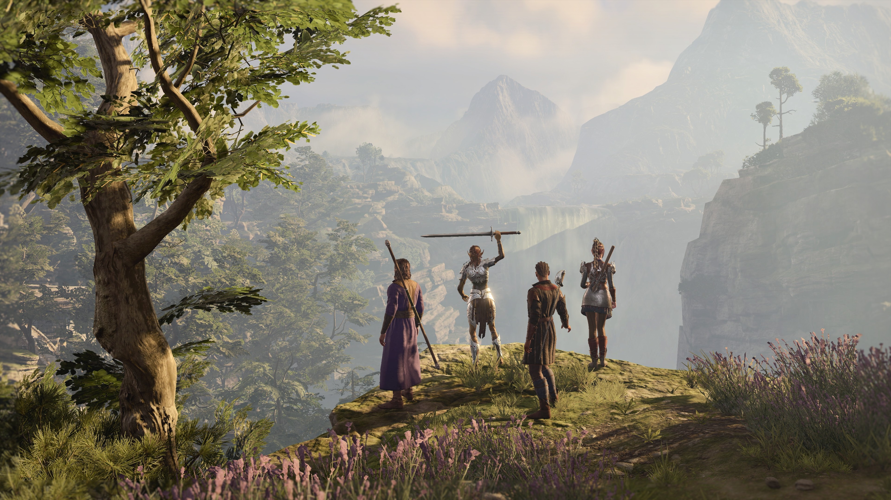
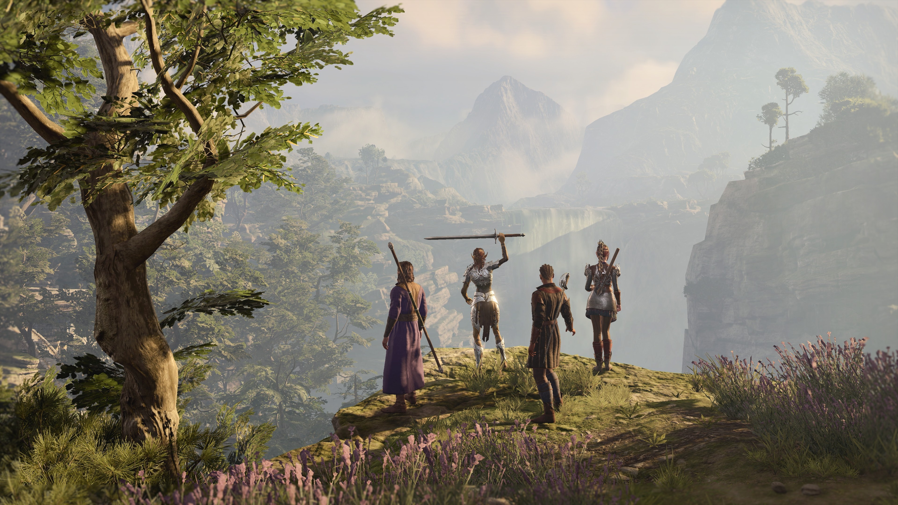

En la siguiente página encontrarás nuestra reseña de Baldurs Gate 3 (2023)
Es el GOTY de 2023 y no es de extrañar, en unos tiempos en los que los juegos se llenan de micropagos
Baldurs Gate 3 da un golpe sobre la mesa y ofrece una gran cantidad de horas de juego sin necesidad de pasar por caja
más de una vez. Una vez lanzado el juego han seguido durante un año completo sacando actualizaciones y escuchando a la
comunidad para pulir el juego al máximo y así lograr la obra maestra que es.
 
